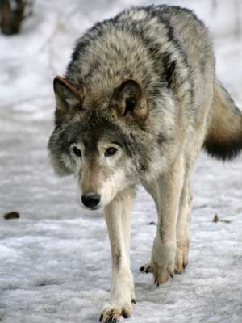

Hábitat y distribución de los lobos
Los lobos son animales diversos, y eso hace que tengan hábitats y distribuciones dispersas en todo el mundo. Estos animales no solamente viven en bosques tupidos, sino que también viven en cualquier lugar donde puedan encontrar alimentos suficientes para poder sobrevivir. Los lobos han sido identificados viviendo en áreas donde muchas personas no imaginarían encontrárselos. Su versatilidad es increíble y les ha ayudado a sobrevivir a pesar de la condición de animal en peligro de extinción.

Algunas especies de lobos viven en los bosques de los Estados Unidos y en otras áreas donde existen abundantes animales que les sirven como alimentos. Otros viven en las regiones frías del Ártico, donde casi no viven animales por el intenso frío. En el ártico viven grandes animales como osos polares y alces.
Existen lobos en las Sierras de Colorado, a lo largo de los Rockies, estos han tenido mucho éxito, gracias a los programas de reintroducción existentes. Independientemente de la ubicación, estos animales deben tener espacio para moverse en su alrededor. Su territorio puede ser desde 25 millas hasta más de 1.000 kilómetros cuadrados, esto dependerá del tipo de lobo y donde resida.
Investigaciones han encontrado evidencias de lobos que viven en todo lo largo del hemisferio norte, a pesar de que son pocos. Estos animales se pueden encontrar en llanos, en los desiertos de África, y en densos bosques. Residirán en un lugar determinado mientras que sus necesidades básicas sean satisfechas y sean capaces de sobrevivir. También serán capaces de adaptarse y avanzar hacia un nuevo territorio si la comida escasea.
La mayoría de los lobos que quedan en el mundo de hoy en día se encuentran viviendo en la helada tundra de Alaska y Canadá. Aquí tienen la capacidad de vivir en zonas remotas y de no ser molestados por los humanos ni por nadie, sin embargo, esto no quiere decir que no están en peligro debido a la falta de alimentos.
Los lobos se mueven entre 8 y 10 horas diarias alrededor de sus áreas de distribución. Es raro que se queden en un solo lugar por mucho tiempo. Marcan su hábitat con orina, así como con olores que provienen de glándulas situadas en sus colas. Estos marcadores son para que otros lobos sepan que están en sus territorios y que los están reclamando.
Es común que el hábitat de una manada de lobos se superponga con otra manada. De forma general no existen conflictos, y, cuando los grupos son diferentes, se evitan unos a los otros, pero cuando el tamaño del hábitat se reduce y los alimentos son difíciles de encontrar, estos animales pueden ser más agresivos los unos hacia los otros.
La razón principal por la que hoy en día los lobos siguen teniendo un momento difícil para sobrevivir es porque su hábitat se está destruyendo, ya que las personas las siguen invadiendo para hacer casas. Las empresas siguen derribando árboles, y esto hace que vivan en una lucha constante por encontrar suficiente alimento para sobrevivir.
Es por esto que en varias ocasiones los lobos se han visto atacando a los animales domésticos. Ellos necesitan una fuente de alimento y cuando se les coloca un animal doméstico en frente los atacan con el fin de alimentarse. Los lobos tienen una mala reputación porque se consideran destructivos, pero cuando se ve el asunto a fondo, se observa que los seres humanos son los responsables de estos comportamientos pues diariamente toman sus hábitats.